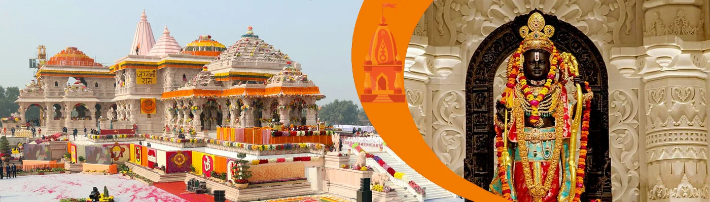

Uttar Pradesh
Ayodhya: Birthplace of Shri Ram
Welcome to Ayodhya, the eternal city and the sacred birthplace (*Janmabhoomi*) of Maryada Purushottam Shri Ram. As one of the seven most ancient and holy cities (*Sapta Puri*) of India, Ayodhya is not just a place on a map but the very heart of Sanatana Dharma's ideals. A pilgrimage here is a journey into the living epic of the Ramayana, a land where every particle of dust is sanctified by the Lord's divine footsteps.
The Puranic Origin: The City of Manu
The scriptures, including the Ramayana, describe Ayodhya as the magnificent and invincible capital of the great Ikshvaku dynasty, founded by Vaivasvata Manu himself. For countless ages, it has been the center of righteousness, the seat of kings who ruled by Dharma. The entire city is revered as a *Tirtha*, a place that grants liberation (*mokṣa*) and is as dear to Lord Vishnu as Vaikuntha itself.
Key Spiritual Experiences
Darshan at Ram Janmabhoomi: The most sacred act in Ayodhya is the *darśana* at the Ram Janmabhoomi, the precise spot where Lord Rama took his divine incarnation. Visiting the magnificent new temple is the culmination of a pilgrim's journey, an experience of profound devotion and spiritual fulfillment.
Holy Dip in the Sarayu River: The sacred Sarayu River is the lifeblood of Ayodhya. A holy dip in its purifying waters is a vital ritual that is believed to wash away sins and prepare the devotee for the Lord's darshan. The serene ghats are perfect for quiet contemplation and prayer.
Hanuman Garhi Temple: Before visiting the main temple, it is a timeless tradition to first seek the blessings of Lord Hanuman at Hanuman Garhi. This fortress-like temple is built on a high mound, and it is believed that Hanuman resides here, eternally guarding the city of his beloved Lord Rama.